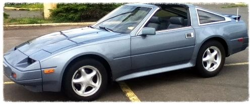

-
In my case, new coil, junkyard PRW2, and ITS ALIVE!!!!! :-) Sorry, just excited.
-
i already have a new coil … so your saying i should most likely replace my power transistor? -
I would. I went to the U-Pull-It, found two on the first row of cars. $9. Bought both just in case, installed the cleaner looking one. Took just a few minutes. There is a link to the instructions on this same thread.
Like you, I checked the other info provided : fuses, lights on ECU, fusable links, etc. I have a new rotor and spark plugs (it was due anyways). So it was down to coil and transistor, and they both looked original 1984 stuff, so it was a good thing to change them anyways.
-
Kudos you figure it out yet -
No, I installed the PRW-2 and still no change. Its just not getting power to spark : ( idk what else to check -
Did you swap the CAS yet? -
@ same spot myself. Yes on CAS, but I need to pull it out and redo, I can hear some very light rubbing noise. I think when I put the distributor in it pushes up enough to make the wheel of the CAS touch. Still, no spark. -
When I installed my new CAS from ASCO the trigger disc would not sit flat/square in the CAS body. I cracked the damn thing when trying to tighten it to lower the right front edge of the CAS. What I did see was a small tab/pin on the underside of the CAS that appears to be a locator pin or leg, I file that off and reinstalled and then the disc sat flat and even.. The disc would have been rubbing the fastening screw on the driver side front of the CAS. CAS wasn't sitting down low enough to clear the disc until I filed that nub off. I fixed my cracked CAS using JB weld, and 10 days later everything works fine.Originally posted by slaponte -
yea
Yea, i bought a brand new distributor and installed it and still nothing.Originally posted by visco1 View Post -
Its probably a long shot but Have you checked volatility of fuel, maby you got bad gas After possibly running out of gas.
Pull hose to filter and drain some fuel into a can and se if it lights you dont need much and please be carfull as not to torch your self or your car
Prw-2… did you switch wires when installing, does it have power?
coil… have power?
Dizzy… have power?
Have you ohmed out the wiring harness (looking for shorts or open circuit's
I know we covered some of this befor just double checking -
Yea thats one of the first things me and my dad checked. I bought new fuel lines and fuel filter and than checked for fuel pressure and it was there. Also can hear the fuel pump run and prime fine like it should.Originally posted by C.Gesler View Post
I did switch the wires when putting the PRW-2 on … it was switch the 2 wires that wasnt blue right?
And for checking power to the Coil we did, i bought a new ignition coil and ran a multimeter and its not getting power … -
If your not getting power did you follow the FSM instructions (efec-60 in my 1987 manual) . If no power at main harness it points to the harness or a fuse. Did you look at the ECU and check pins for ignition signal. EFEC 94 - 98.? Swapping an ECU maybe the easiest try if you can find one -
Just buzzing in. I'd take the plug from the ignition coil to the distributor and measure for power there. If none, then the problem resides somewhere along the PRW2, Ignition Coil, and maybe but unlikely, the ECU.
If there is power coming out the wire that stems out of the ignition coil, then it might be the Distributor. I'd check the distributor cap, the CAS inside the distributor, or the spark plug wires.
If still no spark, I'd start thinking ECU. GoodLuckCompressed Springs is the scariest shit EVER!
" border="0" alt=""> -
Check the ignition relay on the driver side kick panel the third relay.

Copyright © 2006–. All rights reserved. Privacy Policy